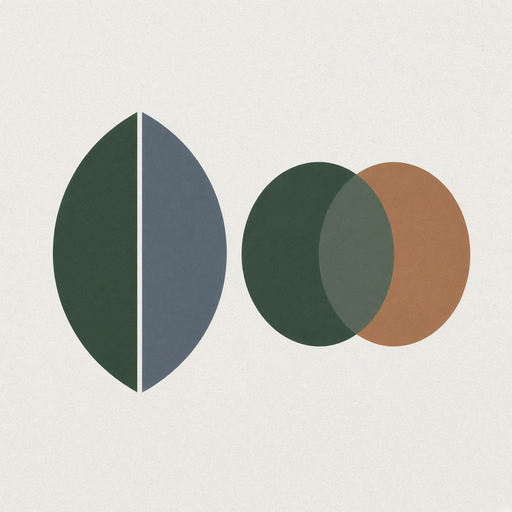

Phyllux apps hub
7. Quantum logic tools
10 modules in this Suite family. Soft launch lists the map; depth grows as Suite modules ship.
71. Quantum Logic ExplorerInteractive logical reasoning environment.

72. Classical vs Quantum Logic SimulatorCompare frameworks on one argument.73. Non-Boolean Logic PlaygroundExperiment with non-classical relations.
74. Complement ExplorerGiven A, explore complementary propositions.
75. Logic Visualization EngineArguments as interactive graphs.
76. Quantum Syllogism SimulatorClassical syllogism versus Quantonic alternatives.
77. Logic Paradox ExplorerZeno, contradiction, excluded middle, uncertainty.
78. Argument MapperArgument as network rather than linear proof.
79. Proof Truth Probability ExplorerBases of Judgment hierarchy explorer.
80. Is This Certain AnalyzerClassify statements by certainty type.